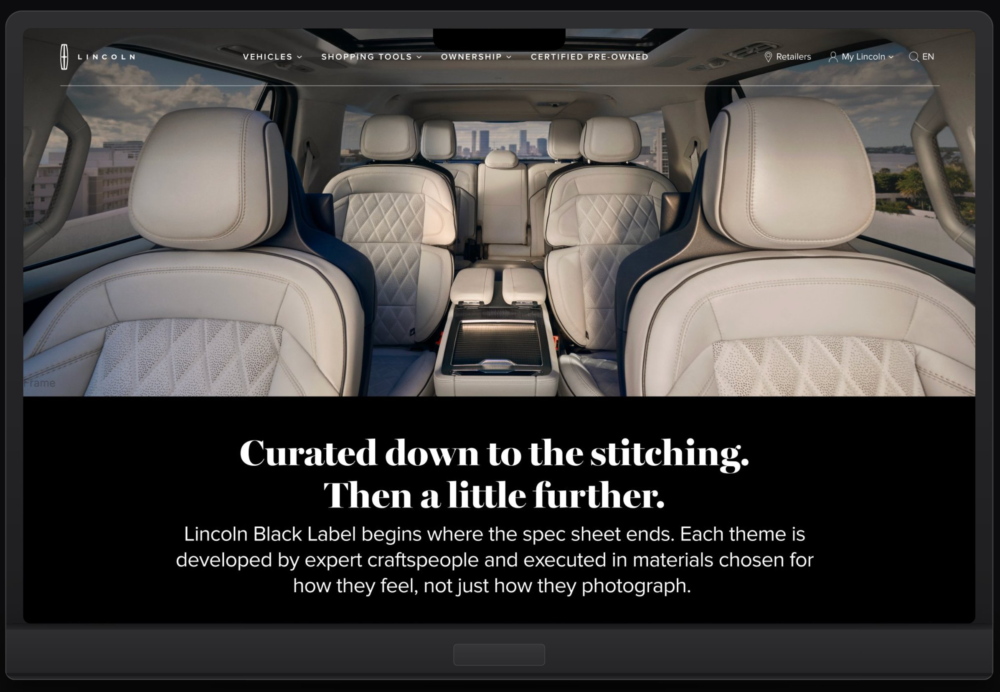
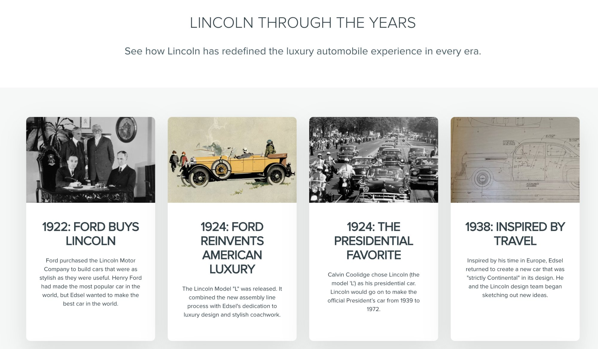

Brand voice systems.
These are the rules behind the headline: what a brand says, how it says it, and what it never does. I write them so the writers who come after me land in the same place, and the thousandth line still sounds like the first.
6
Voice systems, each one started from nothing
4
Regulated categories: wealth, mortgage, telecom, institutional finance
2
Written at the same time as the model instruction set that runs them
What is in one
The persona and the principles
At Goldman Sachs Private Wealth I was embedded at the firm's headquarters across two engagements, writing the voice guidelines for a platform serving clients with $10M or more in investable assets. A voice system starts with deciding who the brand is when it talks, then turning that into rules somebody else can apply without asking. Principles written as instructions rather than aspirations.
“Financial tools are rarely simple. But they can always be clear.”
A principle I wrote for the Goldman Sachs design system, published at design.gs.com, February 2020.
Terminology and nomenclature
At AKQA I replaced years of conflicting convention across VerizonWireless.com and the MyVerizon app with one vocabulary and one set of copy patterns, for a service with 113 million subscribers. Most of a voice system is settling what things are called before anybody has to argue about it.
113Msubscribers reading one vocabulary
Data hub. Data boost. Safety mode.
Plain words, same construction, no invented terms. A customer who learns one can predict the next, which is the only test a naming system has to pass.

One voice across many brands
AREA15 is thirty-five acres and forty-plus venues off the Las Vegas Strip, each venue its own brand, all of them required to sound like one place. Sole writer, thirty pages in ten weeks, and no voice guide in existence when I arrived. It is the hardest version of the problem, because the system has to hold one tone steady while the subject changes completely every few hundred words.
What it has to survive
Many hands
I owned Lincoln's voice for five years across two offices, every agency partner, and every market, through four vehicle launches and the brand's centennial. A voice system is only real when people who have never met apply it the same way, which makes arbitration most of the job.


Three formats, three different teams, one voice. The system is what makes that sentence true rather than lucky.
Bad news
At Better.com I spent a year on onboarding, loan application flows, and the error and delay states inside a mortgage. Most voice guides specify how a brand sounds when things go well. Almost none say what happens when the news is bad, which is the only part that is actually hard.

“We didn’t hear back from the underwriter. That’s normal, we’ll ping them again tomorrow.”
Error and delay state
“This is the part most lenders make complicated. We’re going to make it a checklist.”
Document upload intro
A blank page
SoundCloud hired me as the first dedicated writer in the company's history. Air Company had a novel technology and a luxury bottle and nothing in between. Four times now the job has started with no process, no precedent, and nobody to ask.

Writing it for machines
Rules a model can follow
A guideline written for a person and one written for a model are not the same document. On Lincoln the voice and style rules were built into a working model as an instruction set, with a strict and growing list of guardrails, so product owners who were not writers could draft on brand. Nothing reached the client without a writer reading it first. Same at AREA15, where the rules and the instruction set were written at once.
Grading what comes out
I train and evaluate AI models on writing quality for an AI company, under NDA. Writing the standard and then grading against it changes how the standard gets written. A rule precise enough for a model to follow exposes every place the human version was vague and got away with it.